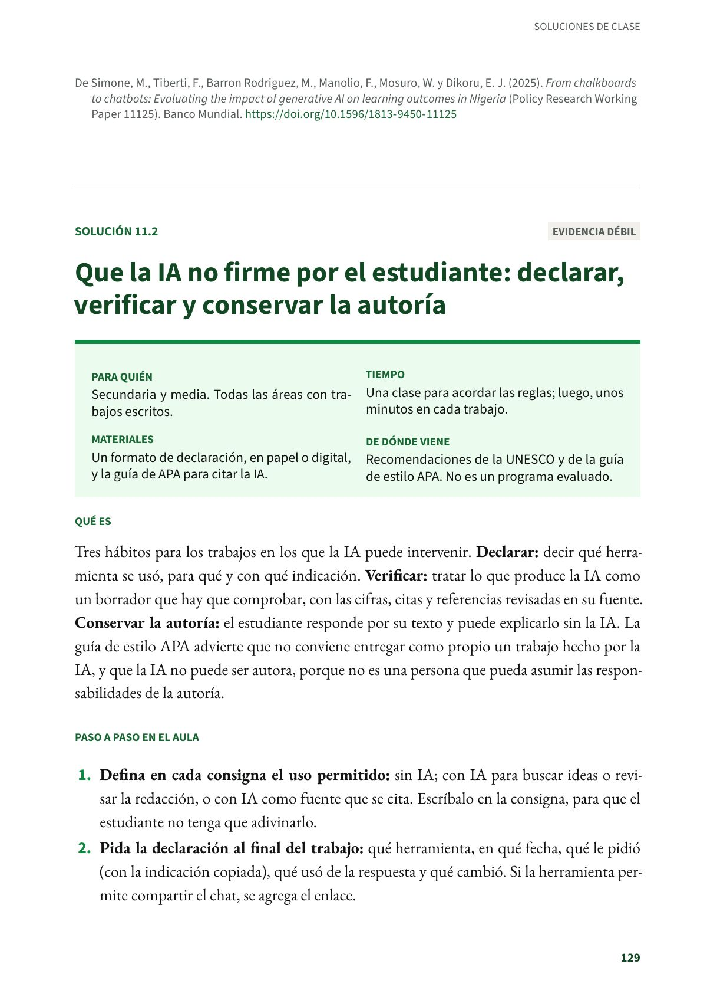
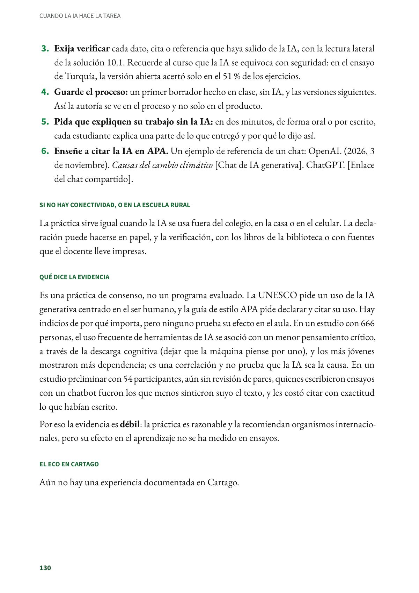
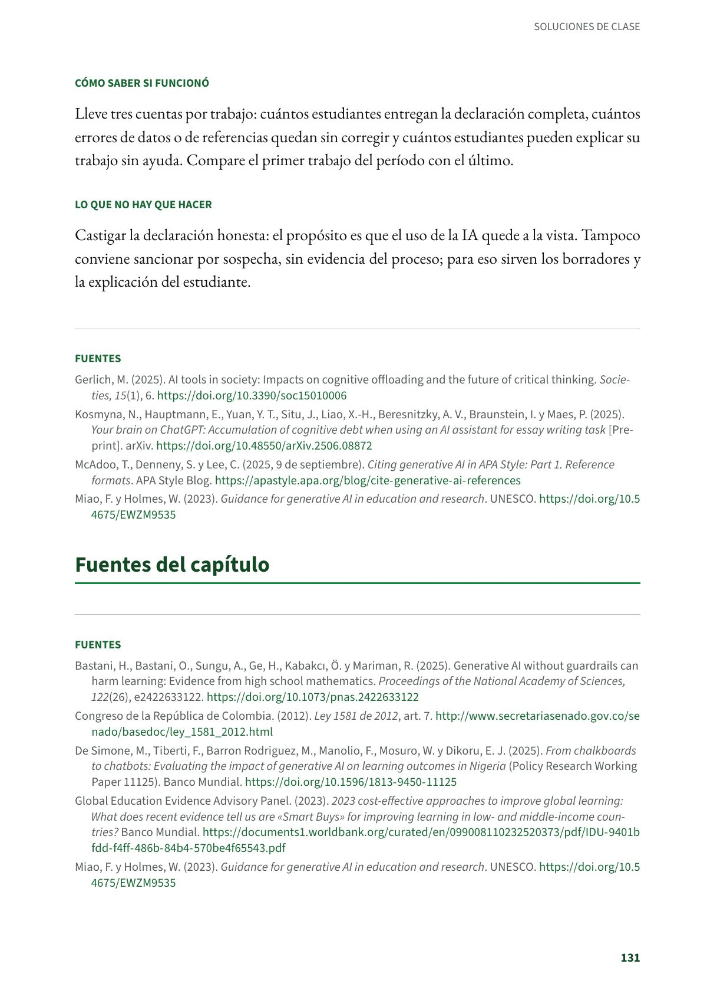

Que la IA no firme por el estudiante: declarar, verificar y conservar la autoría
Tres hábitos para los trabajos en los que la IA puede intervenir. Secundaria y media. Evidencia débil.
PDF · 3 págs. · 75 KBEn resumen
- Evidencia: débil.
- Para quién: Secundaria y media. Todas las áreas con trabajos escritos.
- Tiempo: Una clase para acordar las reglas; luego, unos minutos en cada trabajo.
- Materiales: Un formato de declaración, en papel o digital, y la guía de APA para citar la IA.
- De dónde viene: Recomendaciones de la UNESCO y de la guía de estilo APA. No es un programa evaluado.
Qué es
Tres hábitos para los trabajos en los que la IA puede intervenir. Declarar: decir qué herramienta se usó, para qué y con qué indicación. Verificar: tratar lo que produce la IA como un borrador que hay que comprobar, con las cifras, citas y referencias revisadas en su fuente. Conservar la autoría: el estudiante responde por su texto y puede explicarlo sin la IA. La guía de estilo APA advierte que no conviene entregar como propio un trabajo hecho por la IA, y que la IA no puede ser autora, porque no es una persona que pueda asumir las responsabilidades de la autoría.
Paso a paso en el aula
- Defina en cada consigna el uso permitido: sin IA; con IA para buscar ideas o revisar la redacción, o con IA como fuente que se cita. Escríbalo en la consigna, para que el estudiante no tenga que adivinarlo.
- Pida la declaración al final del trabajo: qué herramienta, en qué fecha, qué le pidió (con la indicación copiada), qué usó de la respuesta y qué cambió. Si la herramienta permite compartir el chat, se agrega el enlace.
- Exija verificar cada dato, cita o referencia que haya salido de la IA, con la lectura lateral de la solución 10.1. Recuerde al curso que la IA se equivoca con seguridad: en el ensayo de Turquía, la versión abierta acertó solo en el 51 % de los ejercicios.
- Guarde el proceso: un primer borrador hecho en clase, sin IA, y las versiones siguientes. Así la autoría se ve en el proceso y no solo en el producto.
- Pida que expliquen su trabajo sin la IA: en dos minutos, de forma oral o por escrito, cada estudiante explica una parte de lo que entregó y por qué lo dijo así.
- Enseñe a citar la IA en APA. Un ejemplo de referencia de un chat: OpenAI. (2026, 3 de noviembre). Causas del cambio climático [Chat de IA generativa]. ChatGPT. [Enlace del chat compartido].
Si no hay conectividad, o en la escuela rural
La práctica sirve igual cuando la IA se usa fuera del colegio, en la casa o en el celular. La declaración puede hacerse en papel, y la verificación, con los libros de la biblioteca o con fuentes que el docente lleve impresas.
Qué dice la evidencia
Es una práctica de consenso, no un programa evaluado. La UNESCO pide un uso de la IA generativa centrado en el ser humano, y la guía de estilo APA pide declarar y citar su uso. Hay indicios de por qué importa, pero ninguno prueba su efecto en el aula. En un estudio con 666 personas, el uso frecuente de herramientas de IA se asoció con un menor pensamiento crítico, a través de la descarga cognitiva (dejar que la máquina piense por uno), y los más jóvenes mostraron más dependencia; es una correlación y no prueba que la IA sea la causa. En un estudio preliminar con 54 participantes, aún sin revisión de pares, quienes escribieron ensayos con un chatbot fueron los que menos sintieron suyo el texto, y les costó citar con exactitud lo que habían escrito.
Por eso la evidencia es débil: la práctica es razonable y la recomiendan organismos internacionales, pero su efecto en el aprendizaje no se ha medido en ensayos.
El eco en Cartago
Aún no hay una experiencia documentada en Cartago.
Cómo saber si funcionó
Lleve tres cuentas por trabajo: cuántos estudiantes entregan la declaración completa, cuántos errores de datos o de referencias quedan sin corregir y cuántos estudiantes pueden explicar su trabajo sin ayuda. Compare el primer trabajo del período con el último.
Lo que no hay que hacer
Castigar la declaración honesta: el propósito es que el uso de la IA quede a la vista. Tampoco conviene sancionar por sospecha, sin evidencia del proceso; para eso sirven los borradores y la explicación del estudiante.
Fuentes
Gerlich, M. (2025). AI tools in society: Impacts on cognitive offloading and the future of critical thinking. Societies, 15(1), 6. doi.org
Kosmyna, N., Hauptmann, E., Yuan, Y. T., Situ, J., Liao, X.-H., Beresnitzky, A. V., Braunstein, I. y Maes, P. (2025). Your brain on ChatGPT: Accumulation of cognitive debt when using an AI assistant for essay writing task [Preprint]. arXiv. doi.org
McAdoo, T., Denneny, S. y Lee, C. (2025, 9 de septiembre). Citing generative AI in APA Style: Part 1. Reference formats. APA Style Blog. apastyle.apa.org
Miao, F. y Holmes, W. (2023). Guidance for generative AI in education and research. UNESCO. doi.org
Así se ve en el libro
3 páginas

